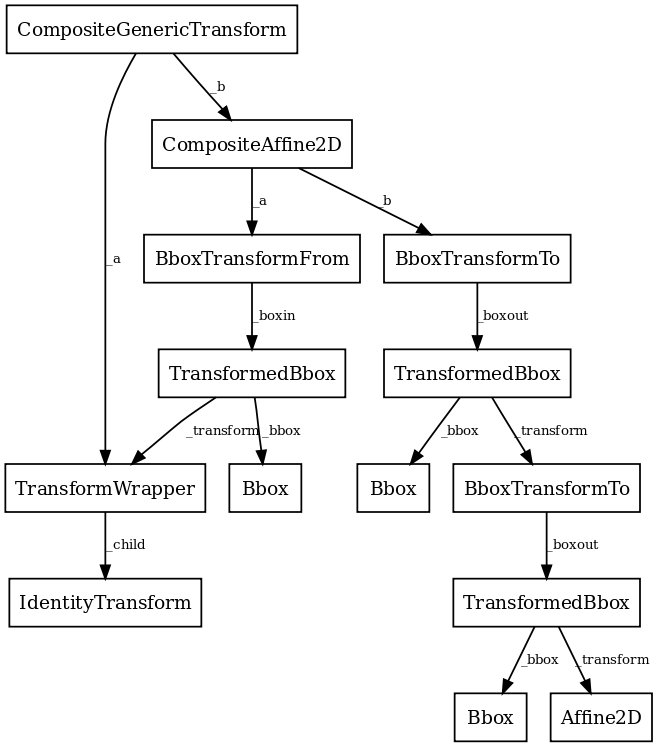

matplotlib.transforms#
Matplotlib includes a framework for arbitrary geometric transformations that is used determine the final position of all elements drawn on the canvas.
Transforms are composed into trees of TransformNode objects
whose actual value depends on their children. When the contents of
children change, their parents are automatically invalidated. The
next time an invalidated transform is accessed, it is recomputed to
reflect those changes. This invalidation/caching approach prevents
unnecessary recomputations of transforms, and contributes to better
interactive performance.
For example, here is a graph of the transform tree used to plot data to the graph:
The framework can be used for both affine and non-affine transformations. However, for speed, we want to use the backend renderers to perform affine transformations whenever possible. Therefore, it is possible to perform just the affine or non-affine part of a transformation on a set of data. The affine is always assumed to occur after the non-affine. For any transform:
full transform == non-affine part + affine part
The backends are not expected to handle non-affine transformations themselves.
See the tutorial Transformations Tutorial for examples of how to use transforms.
- class matplotlib.transforms.Affine2D(matrix=None, **kwargs)[source]#
Bases:
Affine2DBaseA mutable 2D affine transformation.
Initialize an Affine transform from a 3x3 numpy float array:
a c e b d f 0 0 1
If matrix is None, initialize with the identity transform.
- static from_values(a, b, c, d, e, f)[source]#
Create a new Affine2D instance from the given values:
a c e b d f 0 0 1
.
- rotate(theta)[source]#
Add a rotation (in radians) to this transform in place.
Returns self, so this method can easily be chained with more calls to
rotate(),rotate_deg(),translate()andscale().
- rotate_around(x, y, theta)[source]#
Add a rotation (in radians) around the point (x, y) in place.
Returns self, so this method can easily be chained with more calls to
rotate(),rotate_deg(),translate()andscale().
- rotate_deg(degrees)[source]#
Add a rotation (in degrees) to this transform in place.
Returns self, so this method can easily be chained with more calls to
rotate(),rotate_deg(),translate()andscale().
- rotate_deg_around(x, y, degrees)[source]#
Add a rotation (in degrees) around the point (x, y) in place.
Returns self, so this method can easily be chained with more calls to
rotate(),rotate_deg(),translate()andscale().
- scale(sx, sy=None)[source]#
Add a scale in place.
If sy is None, the same scale is applied in both the x- and y-directions.
Returns self, so this method can easily be chained with more calls to
rotate(),rotate_deg(),translate()andscale().
- set(other)[source]#
Set this transformation from the frozen copy of another
Affine2DBaseobject.
- set_matrix(mtx)[source]#
Set the underlying transformation matrix from a 3x3 array:
a c e b d f 0 0 1
.
- skew(xShear, yShear)[source]#
Add a skew in place.
xShear and yShear are the shear angles along the x- and y-axes, respectively, in radians.
Returns self, so this method can easily be chained with more calls to
rotate(),rotate_deg(),translate()andscale().
- skew_deg(xShear, yShear)[source]#
Add a skew in place.
xShear and yShear are the shear angles along the x- and y-axes, respectively, in degrees.
Returns self, so this method can easily be chained with more calls to
rotate(),rotate_deg(),translate()andscale().
- translate(tx, ty)[source]#
Add a translation in place.
Returns self, so this method can easily be chained with more calls to
rotate(),rotate_deg(),translate()andscale().
- class matplotlib.transforms.Affine2DBase(*args, **kwargs)[source]#
Bases:
AffineBaseThe base class of all 2D affine transformations.
2D affine transformations are performed using a 3x3 numpy array:
a c e b d f 0 0 1
This class provides the read-only interface. For a mutable 2D affine transformation, use
Affine2D.Subclasses of this class will generally only need to override a constructor and
get_matrixthat generates a custom 3x3 matrix.- Parameters:
- shorthand_namestr
A string representing the "name" of the transform. The name carries no significance other than to improve the readability of
str(transform)when DEBUG=True.
- frozen()[source]#
Return a frozen copy of this transform node. The frozen copy will not be updated when its children change. Useful for storing a previously known state of a transform where
copy.deepcopy()might normally be used.
- has_inverse = True#
True if this transform has a corresponding inverse transform.
- input_dims = 2#
The number of input dimensions of this transform. Must be overridden (with integers) in the subclass.
- inverted()[source]#
Return the corresponding inverse transformation.
It holds
x == self.inverted().transform(self.transform(x)).The return value of this method should be treated as temporary. An update to self does not cause a corresponding update to its inverted copy.
- property is_separable#
bool(x) -> bool
Returns True when the argument x is true, False otherwise. The builtins True and False are the only two instances of the class bool. The class bool is a subclass of the class int, and cannot be subclassed.
- output_dims = 2#
The number of output dimensions of this transform. Must be overridden (with integers) in the subclass.
- transform_affine(values)[source]#
Apply only the affine part of this transformation on the given array of values.
transform(values)is always equivalent totransform_affine(transform_non_affine(values)).In non-affine transformations, this is generally a no-op. In affine transformations, this is equivalent to
transform(values).- Parameters:
- valuesarray
The input values as an array of length
input_dimsor shape (N,input_dims).
- Returns:
- array
The output values as an array of length
output_dimsor shape (N,output_dims), depending on the input.
- class matplotlib.transforms.AffineBase(*args, **kwargs)[source]#
Bases:
TransformThe base class of all affine transformations of any number of dimensions.
- Parameters:
- shorthand_namestr
A string representing the "name" of the transform. The name carries no significance other than to improve the readability of
str(transform)when DEBUG=True.
- is_affine = True#
- transform(values)[source]#
Apply this transformation on the given array of values.
- Parameters:
- valuesarray-like
The input values as an array of length
input_dimsor shape (N,input_dims).
- Returns:
- array
The output values as an array of length
output_dimsor shape (N,output_dims), depending on the input.
- transform_affine(values)[source]#
Apply only the affine part of this transformation on the given array of values.
transform(values)is always equivalent totransform_affine(transform_non_affine(values)).In non-affine transformations, this is generally a no-op. In affine transformations, this is equivalent to
transform(values).- Parameters:
- valuesarray
The input values as an array of length
input_dimsor shape (N,input_dims).
- Returns:
- array
The output values as an array of length
output_dimsor shape (N,output_dims), depending on the input.
- transform_non_affine(values)[source]#
Apply only the non-affine part of this transformation.
transform(values)is always equivalent totransform_affine(transform_non_affine(values)).In non-affine transformations, this is generally equivalent to
transform(values). In affine transformations, this is always a no-op.- Parameters:
- valuesarray
The input values as an array of length
input_dimsor shape (N,input_dims).
- Returns:
- array
The output values as an array of length
output_dimsor shape (N,output_dims), depending on the input.
- transform_path(path)[source]#
Apply the transform to
Pathpath, returning a newPath.In some cases, this transform may insert curves into the path that began as line segments.
- class matplotlib.transforms.AffineDeltaTransform(transform, **kwargs)[source]#
Bases:
Affine2DBaseA transform wrapper for transforming displacements between pairs of points.
This class is intended to be used to transform displacements ("position deltas") between pairs of points (e.g., as the
offset_transformofCollections): given a transformtsuch thatt = AffineDeltaTransform(t) + offset,AffineDeltaTransformsatisfiesAffineDeltaTransform(a - b) == AffineDeltaTransform(a) - AffineDeltaTransform(b).This is implemented by forcing the offset components of the transform matrix to zero.
This class is experimental as of 3.3, and the API may change.
- Parameters:
- shorthand_namestr
A string representing the "name" of the transform. The name carries no significance other than to improve the readability of
str(transform)when DEBUG=True.
- class matplotlib.transforms.Bbox(points, **kwargs)[source]#
Bases:
BboxBaseA mutable bounding box.
Examples
Create from known bounds
The default constructor takes the boundary "points"
[[xmin, ymin], [xmax, ymax]].>>> Bbox([[1, 1], [3, 7]]) Bbox([[1.0, 1.0], [3.0, 7.0]])
Alternatively, a Bbox can be created from the flattened points array, the so-called "extents"
(xmin, ymin, xmax, ymax)>>> Bbox.from_extents(1, 1, 3, 7) Bbox([[1.0, 1.0], [3.0, 7.0]])
or from the "bounds"
(xmin, ymin, width, height).>>> Bbox.from_bounds(1, 1, 2, 6) Bbox([[1.0, 1.0], [3.0, 7.0]])
Create from collections of points
The "empty" object for accumulating Bboxs is the null bbox, which is a stand-in for the empty set.
>>> Bbox.null() Bbox([[inf, inf], [-inf, -inf]])
Adding points to the null bbox will give you the bbox of those points.
>>> box = Bbox.null() >>> box.update_from_data_xy([[1, 1]]) >>> box Bbox([[1.0, 1.0], [1.0, 1.0]]) >>> box.update_from_data_xy([[2, 3], [3, 2]], ignore=False) >>> box Bbox([[1.0, 1.0], [3.0, 3.0]])
Setting
ignore=Trueis equivalent to starting over from a null bbox.>>> box.update_from_data_xy([[1, 1]], ignore=True) >>> box Bbox([[1.0, 1.0], [1.0, 1.0]])
Warning
It is recommended to always specify
ignoreexplicitly. If not, the default value ofignorecan be changed at any time by code with access to your Bbox, for example using the methodignore.Properties of the ``null`` bbox
Note
The current behavior of
Bbox.null()may be surprising as it does not have all of the properties of the "empty set", and as such does not behave like a "zero" object in the mathematical sense. We may change that in the future (with a deprecation period).The null bbox is the identity for intersections
>>> Bbox.intersection(Bbox([[1, 1], [3, 7]]), Bbox.null()) Bbox([[1.0, 1.0], [3.0, 7.0]])
except with itself, where it returns the full space.
>>> Bbox.intersection(Bbox.null(), Bbox.null()) Bbox([[-inf, -inf], [inf, inf]])
A union containing null will always return the full space (not the other set!)
>>> Bbox.union([Bbox([[0, 0], [0, 0]]), Bbox.null()]) Bbox([[-inf, -inf], [inf, inf]])
- Parameters:
- points
ndarray A (2, 2) array of the form
[[x0, y0], [x1, y1]].
- points
- static from_bounds(x0, y0, width, height)[source]#
Create a new
Bboxfrom x0, y0, width and height.width and height may be negative.
- static from_extents(*args, minpos=None)[source]#
Create a new Bbox from left, bottom, right and top.
The y-axis increases upwards.
- Parameters:
- left, bottom, right, topfloat
The four extents of the bounding box.
- minposfloat or None
If this is supplied, the Bbox will have a minimum positive value set. This is useful when dealing with logarithmic scales and other scales where negative bounds result in floating point errors.
- frozen()[source]#
The base class for anything that participates in the transform tree and needs to invalidate its parents or be invalidated. This includes classes that are not really transforms, such as bounding boxes, since some transforms depend on bounding boxes to compute their values.
- get_points()[source]#
Get the points of the bounding box as an array of the form
[[x0, y0], [x1, y1]].
- ignore(value)[source]#
Set whether the existing bounds of the box should be ignored by subsequent calls to
update_from_data_xy().- valuebool
When
True, subsequent calls toupdate_from_data_xywill ignore the existing bounds of theBbox.When
False, subsequent calls toupdate_from_data_xywill include the existing bounds of theBbox.
- property intervalx#
The pair of x coordinates that define the bounding box.
This is not guaranteed to be sorted from left to right.
- property intervaly#
The pair of y coordinates that define the bounding box.
This is not guaranteed to be sorted from bottom to top.
- property minpos#
The minimum positive value in both directions within the Bbox.
This is useful when dealing with logarithmic scales and other scales where negative bounds result in floating point errors, and will be used as the minimum extent instead of p0.
- property minposx#
The minimum positive value in the x-direction within the Bbox.
This is useful when dealing with logarithmic scales and other scales where negative bounds result in floating point errors, and will be used as the minimum x-extent instead of x0.
- property minposy#
The minimum positive value in the y-direction within the Bbox.
This is useful when dealing with logarithmic scales and other scales where negative bounds result in floating point errors, and will be used as the minimum y-extent instead of y0.
- property p0#
The first pair of (x, y) coordinates that define the bounding box.
This is not guaranteed to be the bottom-left corner (for that, use
min).
- property p1#
The second pair of (x, y) coordinates that define the bounding box.
This is not guaranteed to be the top-right corner (for that, use
max).
- set_points(points)[source]#
Set the points of the bounding box directly from an array of the form
[[x0, y0], [x1, y1]]. No error checking is performed, as this method is mainly for internal use.
- update_from_data_x(x, ignore=None)[source]#
Update the x-bounds of the
Bboxbased on the passed in data. After updating, the bounds will have positive width, and x0 will be the minimal value.
- update_from_data_xy(xy, ignore=None, updatex=True, updatey=True)[source]#
Update the
Bboxbounds based on the passed in xy coordinates.After updating, the bounds will have positive width and height; x0 and y0 will be the minimal values.
- update_from_data_y(y, ignore=None)[source]#
Update the y-bounds of the
Bboxbased on the passed in data. After updating, the bounds will have positive height, and y0 will be the minimal value.
- update_from_path(path, ignore=None, updatex=True, updatey=True)[source]#
Update the bounds of the
Bboxto contain the vertices of the provided path. After updating, the bounds will have positive width and height; x0 and y0 will be the minimal values.
- property x0#
The first of the pair of x coordinates that define the bounding box.
This is not guaranteed to be less than
x1(for that, usexmin).
- property x1#
The second of the pair of x coordinates that define the bounding box.
This is not guaranteed to be greater than
x0(for that, usexmax).
- class matplotlib.transforms.BboxBase(shorthand_name=None)[source]#
Bases:
TransformNodeThe base class of all bounding boxes.
This class is immutable;
Bboxis a mutable subclass.The canonical representation is as two points, with no restrictions on their ordering. Convenience properties are provided to get the left, bottom, right and top edges and width and height, but these are not stored explicitly.
- Parameters:
- shorthand_namestr
A string representing the "name" of the transform. The name carries no significance other than to improve the readability of
str(transform)when DEBUG=True.
- anchored(c, container=None)[source]#
Return a copy of the
Bboxanchored to c within container.- Parameters:
See also
- coefs = {'C': (0.5, 0.5), 'E': (1.0, 0.5), 'N': (0.5, 1.0), 'NE': (1.0, 1.0), 'NW': (0, 1.0), 'S': (0.5, 0), 'SE': (1.0, 0), 'SW': (0, 0), 'W': (0, 0.5)}#
- corners()[source]#
Return the corners of this rectangle as an array of points.
Specifically, this returns the array
[[x0, y0], [x0, y1], [x1, y0], [x1, y1]].
- count_contains(vertices)[source]#
Count the number of vertices contained in the
Bbox. Any vertices with a non-finite x or y value are ignored.- Parameters:
- vertices(N, 2) array
- count_overlaps(bboxes)[source]#
Count the number of bounding boxes that overlap this one.
- Parameters:
- bboxessequence of
BboxBase
- bboxessequence of
- expanded(sw, sh)[source]#
Construct a
Bboxby expanding this one around its center by the factors sw and sh.
- frozen()[source]#
The base class for anything that participates in the transform tree and needs to invalidate its parents or be invalidated. This includes classes that are not really transforms, such as bounding boxes, since some transforms depend on bounding boxes to compute their values.
- fully_overlaps(other)[source]#
Return whether this bounding box overlaps with the other bounding box, not including the edges.
- Parameters:
- other
BboxBase
- other
- property height#
The (signed) height of the bounding box.
- static intersection(bbox1, bbox2)[source]#
Return the intersection of bbox1 and bbox2 if they intersect, or None if they don't.
- property intervalx#
The pair of x coordinates that define the bounding box.
This is not guaranteed to be sorted from left to right.
- property intervaly#
The pair of y coordinates that define the bounding box.
This is not guaranteed to be sorted from bottom to top.
- is_affine = True#
- is_bbox = True#
- property max#
The top-right corner of the bounding box.
- property min#
The bottom-left corner of the bounding box.
- overlaps(other)[source]#
Return whether this bounding box overlaps with the other bounding box.
- Parameters:
- other
BboxBase
- other
- property p0#
The first pair of (x, y) coordinates that define the bounding box.
This is not guaranteed to be the bottom-left corner (for that, use
min).
- property p1#
The second pair of (x, y) coordinates that define the bounding box.
This is not guaranteed to be the top-right corner (for that, use
max).
- padded(w_pad, h_pad=None)[source]#
Construct a
Bboxby padding this one on all four sides.- Parameters:
- w_padfloat
Width pad
- h_padfloat, optional
Height pad. Defaults to w_pad.
- rotated(radians)[source]#
Return the axes-aligned bounding box that bounds the result of rotating this
Bboxby an angle of radians.
- shrunk(mx, my)[source]#
Return a copy of the
Bbox, shrunk by the factor mx in the x direction and the factor my in the y direction. The lower left corner of the box remains unchanged. Normally mx and my will be less than 1, but this is not enforced.
- shrunk_to_aspect(box_aspect, container=None, fig_aspect=1.0)[source]#
Return a copy of the
Bbox, shrunk so that it is as large as it can be while having the desired aspect ratio, box_aspect. If the box coordinates are relative (i.e. fractions of a larger box such as a figure) then the physical aspect ratio of that figure is specified with fig_aspect, so that box_aspect can also be given as a ratio of the absolute dimensions, not the relative dimensions.
- property size#
The (signed) width and height of the bounding box.
- splitx(*args)[source]#
Return a list of new
Bboxobjects formed by splitting the original one with vertical lines at fractional positions given by args.
- splity(*args)[source]#
Return a list of new
Bboxobjects formed by splitting the original one with horizontal lines at fractional positions given by args.
- property width#
The (signed) width of the bounding box.
- property x0#
The first of the pair of x coordinates that define the bounding box.
This is not guaranteed to be less than
x1(for that, usexmin).
- property x1#
The second of the pair of x coordinates that define the bounding box.
This is not guaranteed to be greater than
x0(for that, usexmax).
- property xmax#
The right edge of the bounding box.
- property xmin#
The left edge of the bounding box.
- property y0#
The first of the pair of y coordinates that define the bounding box.
This is not guaranteed to be less than
y1(for that, useymin).
- property y1#
The second of the pair of y coordinates that define the bounding box.
This is not guaranteed to be greater than
y0(for that, useymax).
- property ymax#
The top edge of the bounding box.
- property ymin#
The bottom edge of the bounding box.
- class matplotlib.transforms.BboxTransform(boxin, boxout, **kwargs)[source]#
Bases:
Affine2DBaseBboxTransformlinearly transforms points from oneBboxto another.Create a new
BboxTransformthat linearly transforms points from boxin to boxout.- is_separable = True#
True if this transform is separable in the x- and y- dimensions.
- class matplotlib.transforms.BboxTransformFrom(boxin, **kwargs)[source]#
Bases:
Affine2DBaseBboxTransformFromlinearly transforms points from a givenBboxto the unit bounding box.- Parameters:
- shorthand_namestr
A string representing the "name" of the transform. The name carries no significance other than to improve the readability of
str(transform)when DEBUG=True.
- is_separable = True#
True if this transform is separable in the x- and y- dimensions.
- class matplotlib.transforms.BboxTransformTo(boxout, **kwargs)[source]#
Bases:
Affine2DBaseBboxTransformTois a transformation that linearly transforms points from the unit bounding box to a givenBbox.Create a new
BboxTransformTothat linearly transforms points from the unit bounding box to boxout.- is_separable = True#
True if this transform is separable in the x- and y- dimensions.
- class matplotlib.transforms.BboxTransformToMaxOnly(boxout, **kwargs)[source]#
Bases:
BboxTransformToBboxTransformTois a transformation that linearly transforms points from the unit bounding box to a givenBboxwith a fixed upper left of (0, 0).Create a new
BboxTransformTothat linearly transforms points from the unit bounding box to boxout.
- class matplotlib.transforms.BlendedAffine2D(x_transform, y_transform, **kwargs)[source]#
Bases:
_BlendedMixin,Affine2DBaseA "blended" transform uses one transform for the x-direction, and another transform for the y-direction.
This version is an optimization for the case where both child transforms are of type
Affine2DBase.Create a new "blended" transform using x_transform to transform the x-axis and y_transform to transform the y-axis.
Both x_transform and y_transform must be 2D affine transforms.
You will generally not call this constructor directly but use the
blended_transform_factoryfunction instead, which can determine automatically which kind of blended transform to create.- is_separable = True#
True if this transform is separable in the x- and y- dimensions.
- class matplotlib.transforms.BlendedGenericTransform(x_transform, y_transform, **kwargs)[source]#
Bases:
_BlendedMixin,TransformA "blended" transform uses one transform for the x-direction, and another transform for the y-direction.
This "generic" version can handle any given child transform in the x- and y-directions.
Create a new "blended" transform using x_transform to transform the x-axis and y_transform to transform the y-axis.
You will generally not call this constructor directly but use the
blended_transform_factoryfunction instead, which can determine automatically which kind of blended transform to create.- contains_branch(other)[source]#
Return whether the given transform is a sub-tree of this transform.
This routine uses transform equality to identify sub-trees, therefore in many situations it is object id which will be used.
For the case where the given transform represents the whole of this transform, returns True.
- property depth#
Return the number of transforms which have been chained together to form this Transform instance.
Note
For the special case of a Composite transform, the maximum depth of the two is returned.
- frozen()[source]#
Return a frozen copy of this transform node. The frozen copy will not be updated when its children change. Useful for storing a previously known state of a transform where
copy.deepcopy()might normally be used.
- property has_inverse#
bool(x) -> bool
Returns True when the argument x is true, False otherwise. The builtins True and False are the only two instances of the class bool. The class bool is a subclass of the class int, and cannot be subclassed.
- input_dims = 2#
The number of input dimensions of this transform. Must be overridden (with integers) in the subclass.
- inverted()[source]#
Return the corresponding inverse transformation.
It holds
x == self.inverted().transform(self.transform(x)).The return value of this method should be treated as temporary. An update to self does not cause a corresponding update to its inverted copy.
- property is_affine#
bool(x) -> bool
Returns True when the argument x is true, False otherwise. The builtins True and False are the only two instances of the class bool. The class bool is a subclass of the class int, and cannot be subclassed.
- is_separable = True#
True if this transform is separable in the x- and y- dimensions.
- output_dims = 2#
The number of output dimensions of this transform. Must be overridden (with integers) in the subclass.
- pass_through = True#
If pass_through is True, all ancestors will always be invalidated, even if 'self' is already invalid.
- transform_non_affine(values)[source]#
Apply only the non-affine part of this transformation.
transform(values)is always equivalent totransform_affine(transform_non_affine(values)).In non-affine transformations, this is generally equivalent to
transform(values). In affine transformations, this is always a no-op.- Parameters:
- valuesarray
The input values as an array of length
input_dimsor shape (N,input_dims).
- Returns:
- array
The output values as an array of length
output_dimsor shape (N,output_dims), depending on the input.
- class matplotlib.transforms.CompositeAffine2D(a, b, **kwargs)[source]#
Bases:
Affine2DBaseA composite transform formed by applying transform a then transform b.
This version is an optimization that handles the case where both a and b are 2D affines.
Create a new composite transform that is the result of applying
Affine2DBasea thenAffine2DBaseb.You will generally not call this constructor directly but write
a + binstead, which will automatically choose the best kind of composite transform instance to create.- property depth#
Return the number of transforms which have been chained together to form this Transform instance.
Note
For the special case of a Composite transform, the maximum depth of the two is returned.
- class matplotlib.transforms.CompositeGenericTransform(a, b, **kwargs)[source]#
Bases:
TransformA composite transform formed by applying transform a then transform b.
This "generic" version can handle any two arbitrary transformations.
Create a new composite transform that is the result of applying transform a then transform b.
You will generally not call this constructor directly but write
a + binstead, which will automatically choose the best kind of composite transform instance to create.- property depth#
Return the number of transforms which have been chained together to form this Transform instance.
Note
For the special case of a Composite transform, the maximum depth of the two is returned.
- frozen()[source]#
Return a frozen copy of this transform node. The frozen copy will not be updated when its children change. Useful for storing a previously known state of a transform where
copy.deepcopy()might normally be used.
- property has_inverse#
bool(x) -> bool
Returns True when the argument x is true, False otherwise. The builtins True and False are the only two instances of the class bool. The class bool is a subclass of the class int, and cannot be subclassed.
- inverted()[source]#
Return the corresponding inverse transformation.
It holds
x == self.inverted().transform(self.transform(x)).The return value of this method should be treated as temporary. An update to self does not cause a corresponding update to its inverted copy.
- property is_affine#
bool(x) -> bool
Returns True when the argument x is true, False otherwise. The builtins True and False are the only two instances of the class bool. The class bool is a subclass of the class int, and cannot be subclassed.
- property is_separable#
bool(x) -> bool
Returns True when the argument x is true, False otherwise. The builtins True and False are the only two instances of the class bool. The class bool is a subclass of the class int, and cannot be subclassed.
- pass_through = True#
If pass_through is True, all ancestors will always be invalidated, even if 'self' is already invalid.
- transform_affine(values)[source]#
Apply only the affine part of this transformation on the given array of values.
transform(values)is always equivalent totransform_affine(transform_non_affine(values)).In non-affine transformations, this is generally a no-op. In affine transformations, this is equivalent to
transform(values).- Parameters:
- valuesarray
The input values as an array of length
input_dimsor shape (N,input_dims).
- Returns:
- array
The output values as an array of length
output_dimsor shape (N,output_dims), depending on the input.
- transform_non_affine(values)[source]#
Apply only the non-affine part of this transformation.
transform(values)is always equivalent totransform_affine(transform_non_affine(values)).In non-affine transformations, this is generally equivalent to
transform(values). In affine transformations, this is always a no-op.- Parameters:
- valuesarray
The input values as an array of length
input_dimsor shape (N,input_dims).
- Returns:
- array
The output values as an array of length
output_dimsor shape (N,output_dims), depending on the input.
- class matplotlib.transforms.IdentityTransform(*args, **kwargs)[source]#
Bases:
Affine2DBaseA special class that does one thing, the identity transform, in a fast way.
- Parameters:
- shorthand_namestr
A string representing the "name" of the transform. The name carries no significance other than to improve the readability of
str(transform)when DEBUG=True.
- frozen()[source]#
Return a frozen copy of this transform node. The frozen copy will not be updated when its children change. Useful for storing a previously known state of a transform where
copy.deepcopy()might normally be used.
- inverted()[source]#
Return the corresponding inverse transformation.
It holds
x == self.inverted().transform(self.transform(x)).The return value of this method should be treated as temporary. An update to self does not cause a corresponding update to its inverted copy.
- transform(values)[source]#
Apply this transformation on the given array of values.
- Parameters:
- valuesarray-like
The input values as an array of length
input_dimsor shape (N,input_dims).
- Returns:
- array
The output values as an array of length
output_dimsor shape (N,output_dims), depending on the input.
- transform_affine(values)[source]#
Apply only the affine part of this transformation on the given array of values.
transform(values)is always equivalent totransform_affine(transform_non_affine(values)).In non-affine transformations, this is generally a no-op. In affine transformations, this is equivalent to
transform(values).- Parameters:
- valuesarray
The input values as an array of length
input_dimsor shape (N,input_dims).
- Returns:
- array
The output values as an array of length
output_dimsor shape (N,output_dims), depending on the input.
- transform_non_affine(values)[source]#
Apply only the non-affine part of this transformation.
transform(values)is always equivalent totransform_affine(transform_non_affine(values)).In non-affine transformations, this is generally equivalent to
transform(values). In affine transformations, this is always a no-op.- Parameters:
- valuesarray
The input values as an array of length
input_dimsor shape (N,input_dims).
- Returns:
- array
The output values as an array of length
output_dimsor shape (N,output_dims), depending on the input.
- transform_path(path)[source]#
Apply the transform to
Pathpath, returning a newPath.In some cases, this transform may insert curves into the path that began as line segments.
- class matplotlib.transforms.LockableBbox(bbox, x0=None, y0=None, x1=None, y1=None, **kwargs)[source]#
Bases:
BboxBaseA
Bboxwhere some elements may be locked at certain values.When the child bounding box changes, the bounds of this bbox will update accordingly with the exception of the locked elements.
- Parameters:
- bbox
Bbox The child bounding box to wrap.
- x0float or None
The locked value for x0, or None to leave unlocked.
- y0float or None
The locked value for y0, or None to leave unlocked.
- x1float or None
The locked value for x1, or None to leave unlocked.
- y1float or None
The locked value for y1, or None to leave unlocked.
- bbox
- property locked_x0#
float or None: The value used for the locked x0.
- property locked_x1#
float or None: The value used for the locked x1.
- property locked_y0#
float or None: The value used for the locked y0.
- property locked_y1#
float or None: The value used for the locked y1.
- class matplotlib.transforms.ScaledTranslation(xt, yt, scale_trans, **kwargs)[source]#
Bases:
Affine2DBaseA transformation that translates by xt and yt, after xt and yt have been transformed by scale_trans.
- Parameters:
- shorthand_namestr
A string representing the "name" of the transform. The name carries no significance other than to improve the readability of
str(transform)when DEBUG=True.
- class matplotlib.transforms.Transform(shorthand_name=None)[source]#
Bases:
TransformNodeThe base class of all
TransformNodeinstances that actually perform a transformation.All non-affine transformations should be subclasses of this class. New affine transformations should be subclasses of
Affine2D.Subclasses of this class should override the following members (at minimum):
inverted()(if an inverse exists)
The following attributes may be overridden if the default is unsuitable:
is_separable(defaults to True for 1D -> 1D transforms, False otherwise)has_inverse(defaults to True ifinverted()is overridden, False otherwise)
If the transform needs to do something non-standard with
matplotlib.path.Pathobjects, such as adding curves where there were once line segments, it should override:- Parameters:
- shorthand_namestr
A string representing the "name" of the transform. The name carries no significance other than to improve the readability of
str(transform)when DEBUG=True.
- __add__(other)[source]#
Compose two transforms together so that self is followed by other.
A + Breturns a transformCso thatC.transform(x) == B.transform(A.transform(x)).
- __sub__(other)[source]#
Compose self with the inverse of other, cancelling identical terms if any:
# In general: A - B == A + B.inverted() # (but see note regarding frozen transforms below). # If A "ends with" B (i.e. A == A' + B for some A') we can cancel # out B: (A' + B) - B == A' # Likewise, if B "starts with" A (B = A + B'), we can cancel out A: A - (A + B') == B'.inverted() == B'^-1
Cancellation (rather than naively returning
A + B.inverted()) is important for multiple reasons:It avoids floating-point inaccuracies when computing the inverse of B:
B - Bis guaranteed to cancel out exactly (resulting in the identity transform), whereasB + B.inverted()may differ by a small epsilon.B.inverted()always returns a frozen transform: if one computesA + B + B.inverted()and later mutatesB, thenB.inverted()won't be updated and the last two terms won't cancel out anymore; on the other hand,A + B - Bwill always be equal toAeven ifBis mutated.
- contains_branch(other)[source]#
Return whether the given transform is a sub-tree of this transform.
This routine uses transform equality to identify sub-trees, therefore in many situations it is object id which will be used.
For the case where the given transform represents the whole of this transform, returns True.
- contains_branch_seperately(other_transform)[source]#
Return whether the given branch is a sub-tree of this transform on each separate dimension.
A common use for this method is to identify if a transform is a blended transform containing an Axes' data transform. e.g.:
x_isdata, y_isdata = trans.contains_branch_seperately(ax.transData)
- property depth#
Return the number of transforms which have been chained together to form this Transform instance.
Note
For the special case of a Composite transform, the maximum depth of the two is returned.
- has_inverse = False#
True if this transform has a corresponding inverse transform.
- input_dims = None#
The number of input dimensions of this transform. Must be overridden (with integers) in the subclass.
- inverted()[source]#
Return the corresponding inverse transformation.
It holds
x == self.inverted().transform(self.transform(x)).The return value of this method should be treated as temporary. An update to self does not cause a corresponding update to its inverted copy.
- is_separable = False#
True if this transform is separable in the x- and y- dimensions.
- output_dims = None#
The number of output dimensions of this transform. Must be overridden (with integers) in the subclass.
- transform(values)[source]#
Apply this transformation on the given array of values.
- Parameters:
- valuesarray-like
The input values as an array of length
input_dimsor shape (N,input_dims).
- Returns:
- array
The output values as an array of length
output_dimsor shape (N,output_dims), depending on the input.
- transform_affine(values)[source]#
Apply only the affine part of this transformation on the given array of values.
transform(values)is always equivalent totransform_affine(transform_non_affine(values)).In non-affine transformations, this is generally a no-op. In affine transformations, this is equivalent to
transform(values).- Parameters:
- valuesarray
The input values as an array of length
input_dimsor shape (N,input_dims).
- Returns:
- array
The output values as an array of length
output_dimsor shape (N,output_dims), depending on the input.
- transform_angles(angles, pts, radians=False, pushoff=1e-05)[source]#
Transform a set of angles anchored at specific locations.
- Parameters:
- angles(N,) array-like
The angles to transform.
- pts(N, 2) array-like
The points where the angles are anchored.
- radiansbool, default: False
Whether angles are radians or degrees.
- pushofffloat
For each point in pts and angle in angles, the transformed angle is computed by transforming a segment of length pushoff starting at that point and making that angle relative to the horizontal axis, and measuring the angle between the horizontal axis and the transformed segment.
- Returns:
- (N,) array
- transform_bbox(bbox)[source]#
Transform the given bounding box.
For smarter transforms including caching (a common requirement in Matplotlib), see
TransformedBbox.
- transform_non_affine(values)[source]#
Apply only the non-affine part of this transformation.
transform(values)is always equivalent totransform_affine(transform_non_affine(values)).In non-affine transformations, this is generally equivalent to
transform(values). In affine transformations, this is always a no-op.- Parameters:
- valuesarray
The input values as an array of length
input_dimsor shape (N,input_dims).
- Returns:
- array
The output values as an array of length
output_dimsor shape (N,output_dims), depending on the input.
- transform_path(path)[source]#
Apply the transform to
Pathpath, returning a newPath.In some cases, this transform may insert curves into the path that began as line segments.
- transform_path_affine(path)[source]#
Apply the affine part of this transform to
Pathpath, returning a newPath.transform_path(path)is equivalent totransform_path_affine(transform_path_non_affine(values)).
- transform_path_non_affine(path)[source]#
Apply the non-affine part of this transform to
Pathpath, returning a newPath.transform_path(path)is equivalent totransform_path_affine(transform_path_non_affine(values)).
- transform_point(point)[source]#
Return a transformed point.
This function is only kept for backcompatibility; the more general
transformmethod is capable of transforming both a list of points and a single point.The point is given as a sequence of length
input_dims. The transformed point is returned as a sequence of lengthoutput_dims.
- class matplotlib.transforms.TransformNode(shorthand_name=None)[source]#
Bases:
objectThe base class for anything that participates in the transform tree and needs to invalidate its parents or be invalidated. This includes classes that are not really transforms, such as bounding boxes, since some transforms depend on bounding boxes to compute their values.
- Parameters:
- shorthand_namestr
A string representing the "name" of the transform. The name carries no significance other than to improve the readability of
str(transform)when DEBUG=True.
- INVALID = 3#
- INVALID_AFFINE = 2#
- INVALID_NON_AFFINE = 1#
- frozen()[source]#
Return a frozen copy of this transform node. The frozen copy will not be updated when its children change. Useful for storing a previously known state of a transform where
copy.deepcopy()might normally be used.
- invalidate()[source]#
Invalidate this
TransformNodeand triggers an invalidation of its ancestors. Should be called any time the transform changes.
- is_affine = False#
- is_bbox = False#
- pass_through = False#
If pass_through is True, all ancestors will always be invalidated, even if 'self' is already invalid.
- class matplotlib.transforms.TransformWrapper(child)[source]#
Bases:
TransformA helper class that holds a single child transform and acts equivalently to it.
This is useful if a node of the transform tree must be replaced at run time with a transform of a different type. This class allows that replacement to correctly trigger invalidation.
TransformWrapperinstances must have the same input and output dimensions during their entire lifetime, so the child transform may only be replaced with another child transform of the same dimensions.child: A
Transforminstance. This child may later be replaced withset().- frozen()[source]#
Return a frozen copy of this transform node. The frozen copy will not be updated when its children change. Useful for storing a previously known state of a transform where
copy.deepcopy()might normally be used.
- property has_inverse#
bool(x) -> bool
Returns True when the argument x is true, False otherwise. The builtins True and False are the only two instances of the class bool. The class bool is a subclass of the class int, and cannot be subclassed.
- property input_dims#
- property is_affine#
bool(x) -> bool
Returns True when the argument x is true, False otherwise. The builtins True and False are the only two instances of the class bool. The class bool is a subclass of the class int, and cannot be subclassed.
- property is_separable#
bool(x) -> bool
Returns True when the argument x is true, False otherwise. The builtins True and False are the only two instances of the class bool. The class bool is a subclass of the class int, and cannot be subclassed.
- property output_dims#
- pass_through = True#
If pass_through is True, all ancestors will always be invalidated, even if 'self' is already invalid.
- class matplotlib.transforms.TransformedBbox(bbox, transform, **kwargs)[source]#
Bases:
BboxBaseA
Bboxthat is automatically transformed by a given transform. When either the child bounding box or transform changes, the bounds of this bbox will update accordingly.
- class matplotlib.transforms.TransformedPatchPath(patch)[source]#
Bases:
TransformedPathA
TransformedPatchPathcaches a non-affine transformed copy of thePatch. This cached copy is automatically updated when the non-affine part of the transform or the patch changes.- Parameters:
- patch
Patch
- patch
- class matplotlib.transforms.TransformedPath(path, transform)[source]#
Bases:
TransformNodeA
TransformedPathcaches a non-affine transformed copy of thePath. This cached copy is automatically updated when the non-affine part of the transform changes.Note
Paths are considered immutable by this class. Any update to the path's vertices/codes will not trigger a transform recomputation.
- get_transformed_path_and_affine()[source]#
Return a copy of the child path, with the non-affine part of the transform already applied, along with the affine part of the path necessary to complete the transformation.
- get_transformed_points_and_affine()[source]#
Return a copy of the child path, with the non-affine part of the transform already applied, along with the affine part of the path necessary to complete the transformation. Unlike
get_transformed_path_and_affine(), no interpolation will be performed.
- matplotlib.transforms.blended_transform_factory(x_transform, y_transform)[source]#
Create a new "blended" transform using x_transform to transform the x-axis and y_transform to transform the y-axis.
A faster version of the blended transform is returned for the case where both child transforms are affine.
- matplotlib.transforms.composite_transform_factory(a, b)[source]#
Create a new composite transform that is the result of applying transform a then transform b.
Shortcut versions of the blended transform are provided for the case where both child transforms are affine, or one or the other is the identity transform.
Composite transforms may also be created using the '+' operator, e.g.:
c = a + b
- matplotlib.transforms.interval_contains(interval, val)[source]#
Check, inclusively, whether an interval includes a given value.
- Parameters:
- interval(float, float)
The endpoints of the interval.
- valfloat
Value to check is within interval.
- Returns:
- bool
Whether val is within the interval.
- matplotlib.transforms.interval_contains_open(interval, val)[source]#
Check, excluding endpoints, whether an interval includes a given value.
- Parameters:
- interval(float, float)
The endpoints of the interval.
- valfloat
Value to check is within interval.
- Returns:
- bool
Whether val is within the interval.
- matplotlib.transforms.nonsingular(vmin, vmax, expander=0.001, tiny=1e-15, increasing=True)[source]#
Modify the endpoints of a range as needed to avoid singularities.
- Parameters:
- vmin, vmaxfloat
The initial endpoints.
- expanderfloat, default: 0.001
Fractional amount by which vmin and vmax are expanded if the original interval is too small, based on tiny.
- tinyfloat, default: 1e-15
Threshold for the ratio of the interval to the maximum absolute value of its endpoints. If the interval is smaller than this, it will be expanded. This value should be around 1e-15 or larger; otherwise the interval will be approaching the double precision resolution limit.
- increasingbool, default: True
If True, swap vmin, vmax if vmin > vmax.
- Returns:
- vmin, vmaxfloat
Endpoints, expanded and/or swapped if necessary. If either input is inf or NaN, or if both inputs are 0 or very close to zero, it returns -expander, expander.